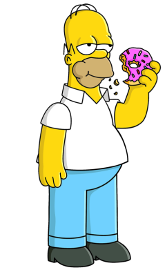

SPRINGFIELD
Bienvenue a Springfield la ville ou j'ai habite juste après South Park. Ce fus un voyage
incroyable car il y a de tout dans cette ville et les habitants se demarquent vraiment de ceux
des autres villes surtout la famille Simpson.
Avant de vous presenter la ville voici la famille qui m'a accueillis.
La famille Simpson.
La famille Simpson.

Homer
 Marge
Marge
 Bart
Bart
 Lisa
Lisa
 Maggie
Maggie
Ici on a leur maison situee au 742 Evergreen Terrace
Sans oublier la cabane dans l'arbre de Bart
N'oubliez surtout pas de passer à la taverne de Moe pour boire un coup
Voici le kwik-e-mart si vous avez besoin de faire courses
Ou bien le Krusty Burger si vous avez la flemme de faire à manger
Et pour finir voici l'ecole elementaire de Springfield
Vous pourrez aussi aller à d'autres endroits que je vous laisse découvrir pour vous-meme
| Places |
|---|
| Usine Nucléaire |
| Stade de Football Américains |
| Statue de Jebediah Springfield |
| Zoo |
| Eglise |
| Da Luigi |